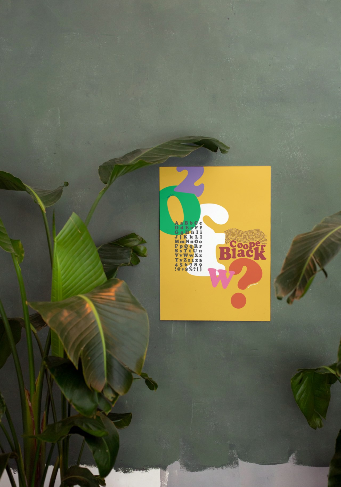
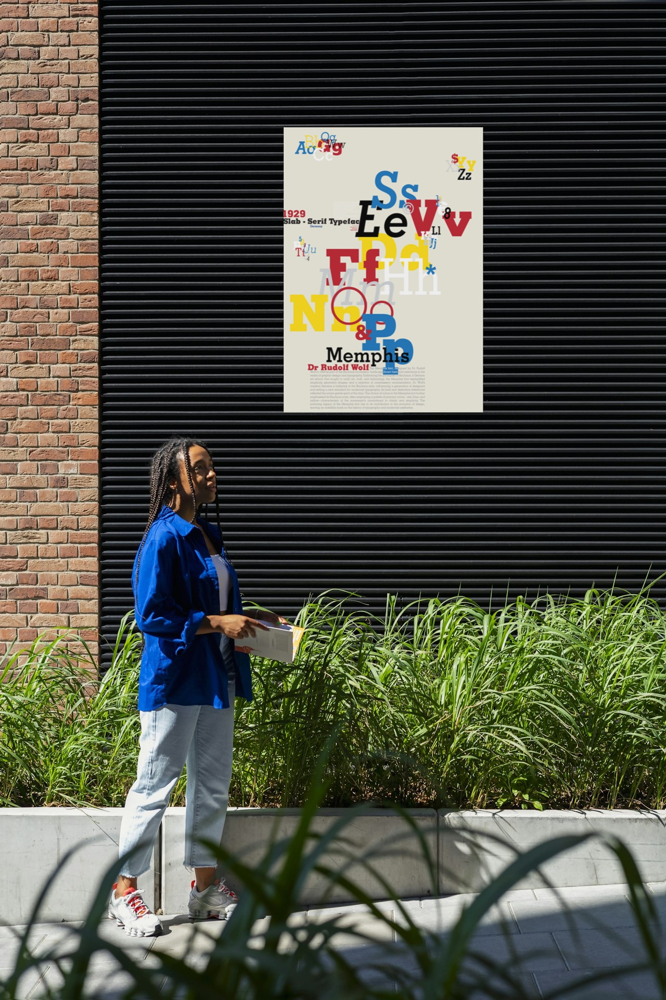

← index
avelino cortina
let's talk
012 — typography series
2024
font posters
three typefaces, three temperaments

cooper black
neue haas grotesk

memphis
← previous
mighty leaf
next →
don't worry dear, i am immortal